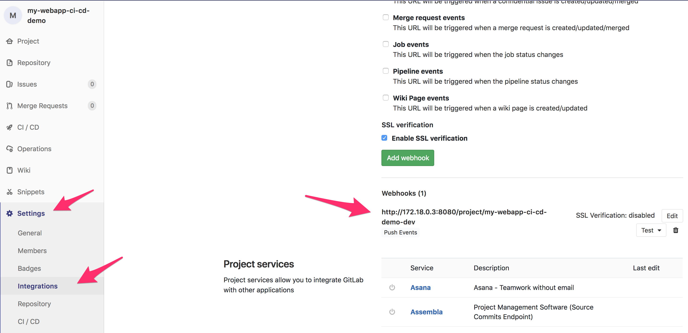
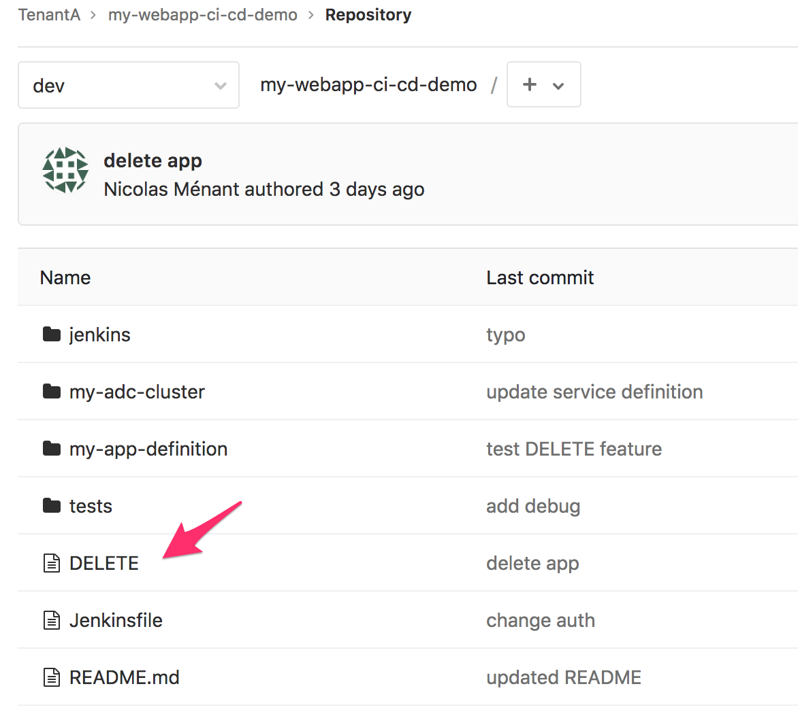
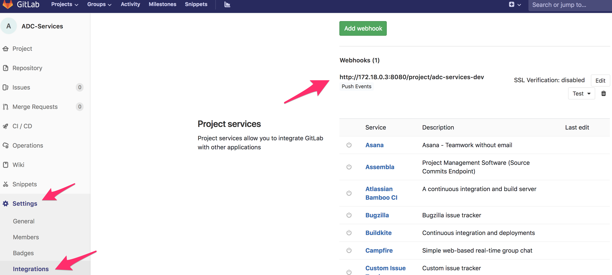

Review Gitlab setup¶
We have setup the following in GitLab:
- A Tenant/User called TenantA. It hosts all the applications and adc services tied to this tenant. You can have multiple applications owned by this user and multiple BIG-IP/ADC services here. For this demo, we will use two different repos in TenantA: my-webapp-ci-cd-demo and ADC-Services
- Another Tenant/User called Larry. It hosts all the Web Application Firewall policies that people can leverage/consume.
Connect to your Gitlab. It should be http://<IP of your VM>:1080/
- Login: root
- Password: Pa55w0rd
Click on Projects > Explore Projects > All
{kind=link}
my-webapp-ci-cd-demo contains the application definition and the ADC services we want to attach to it. It leverages the AS3 definition of a service. It is owned by the user/group called TenantA
ADC Services contains all the services tied to this User/Tenant. It will contain all the different services needed by the application defined in this tenant. It is owned by the user/group called TenantA
Note
it is worth highlighting that in each repo, we leverage the dev branch. The idea is to explain how you can create a CI/CD pipeline for the dev branch and replicate the same process for the master or prod branch. For this demo, we will use the dev branch. Make sure to select the right branch when browsing GitLab.
Security-Policies contains all the approved Web Application Firewall policies. People can retrieve them to use on their WAF solution. It is owned by the user/group called Larry
Gitlab setup - my-webapp-ci-cd-demo¶
Once you’ve selected the dev branch, you should see different folders in the my-webapp-ci-cd-demo repo.

jenkins: This is folder that will be consumed by the CI Server. It contains all the right scripts to process this folder and do the app deployment, update the ADC-services repo, …
my-adc-cluster: this folder will contain the ADC cluster target to host our ADC service. It contains the name of the targetted cluster. Consul will provide us with all the right information related to it: BIG-IP IPs, credentials, … You will also see the service we want to deploy on our ADC cluster. Take some time to review the service definition. You will see that: we leverage the AS3 service definition schema, pool members are not yet defined and that our service definition includes a WAF policy.
The pool member(s) are not defined already because the application is not deployed. In a dynamic environment, you can’t guess what the pool member(s) will be. We will need to deploy the application, get the pool member(s) information and update our service definition accordingly.
my-app-definition: this folder contains the app definition. It contains files that we will use to deploy the app on Openshift: deployment, services, route
test: this folder contains multiple tests to do against the app to ensure it is up and running as expected.
{kind=link}
Note
it is worth highlighting that the ADC service definition is based on the AS3 schema but only contains the service definition! not the full tenant definition needed by AS3. The whole AS3 declaration for this tenant is within the ADC-Services repo that we will review later.
There is also an important file at the root of the repo: jenkinsFile. When you trigger a webhook from GitLab to Jenkins, the first thing Jenkins will do is to retrieve this repo. From here, it will process the jenkinsFile to know what to do (there are other ways but that is how we will proceed here). The whole pipeline is defined in this file and it will execute scripts in the jenkins folder
Every time this repo is updated, it will trigger an already defined WebHook. This WebHook will trigger a pipeline on the Jenkins server. In your my-webapp-ci-cd-demo repo, Go to Setting > Integration to review the WebHook defined.
{kind=link}
You can learn more about WebHooks here: WebHooks.
Here you can see that GitLab is setup to send a “signal” to:
http://172.18.0.3:8080/project/my-webapp-ci-cd-demo-dev
172.18.0.3 is the IP Address of our container running Jenkins (it’s a docker network). The URI: /project/my-webapp-ci-cd-demo-dev defines a project/job/pipeline defined on Jenkins. This is our pipeline.
This specific pipeline will be triggered every time we update our my-webapp-ci-cd-demo repo.
Note
There is a file called DELETE at the root of the my-webapp-ci-cd-demo repo. This file is needed to do the IaC demo. We will explain this in module2.
{kind=link}
Gitlab setup - ADC-Services¶
If you go into the repo ADC-Services and select the dev branch, you should see this:
{kind=link}
Here you should have a folder(s) (here one). Each directory represents a BIG-IP cluster. In this case, we have a single cluster called cluster-nicolas
Note
this cluster is defined in consul so that we can automatically retrieve its IP information, credentials and which port is used to access the management interface. We could add more cluster here if needed
The different python scripts available here will be used by the jenkinsFile to execute the Jenkins pipeline called adc-services-dev.
if you check the folder cluster-nicolas, you’ll see that its empty for now. The reason is that we haven’t deployed yet an application in this cluster. There is only one file called OWNER.
{kind=link}
The main reason for this OWNER file was to put something into the folder. If the folder was empty, it wouldn’t show up in GitLab.
We can also check the WebHook created by going into Settings > Integration:
{kind=link}
Warning
There is something really specific about this ADC-Services repo: IT IS NEVER HANDLED MANUALLY. The expectation here is that the different applications deployed via GitLab will automatically update accordingly this repo. This is something we will be able to test/confirm when doing module2.
Gitlab setup - Larry/Security-Policies¶
Here there is no dev branch. We only have already “approved” security policies that can be consumed by the different application teams. They can retrieve those security policies and import them into their CI/CD pipelines.
If you browse this repository, you’ll see the following:
{kind=link}
Click on the folder policies to see what is available to the application teams.
{kind=link}
Here we see that people have access to three different WAF policies. In our demo, we will use the policy called asm-policy-linux-high.xml.